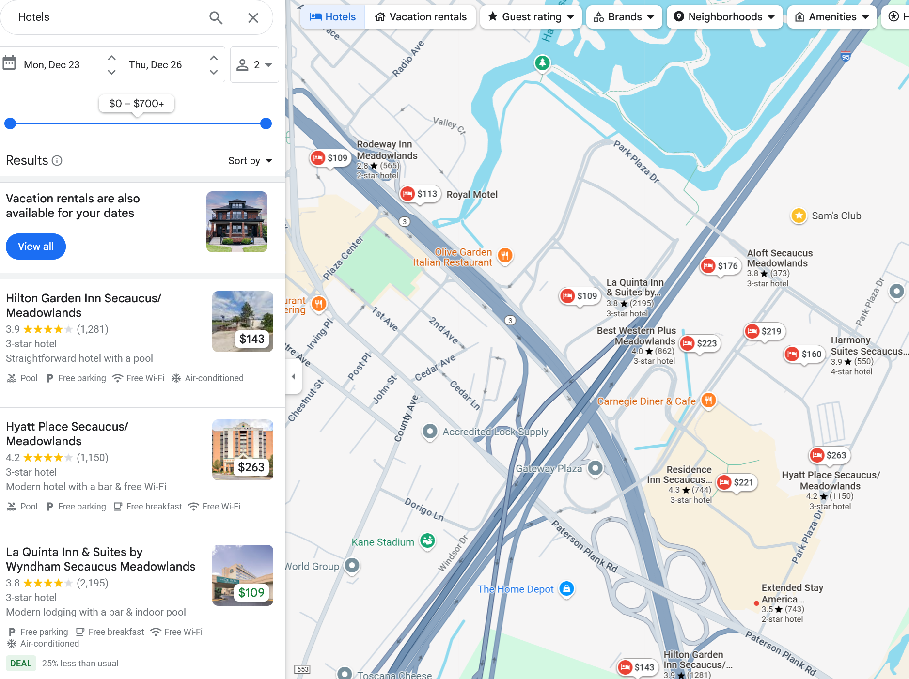
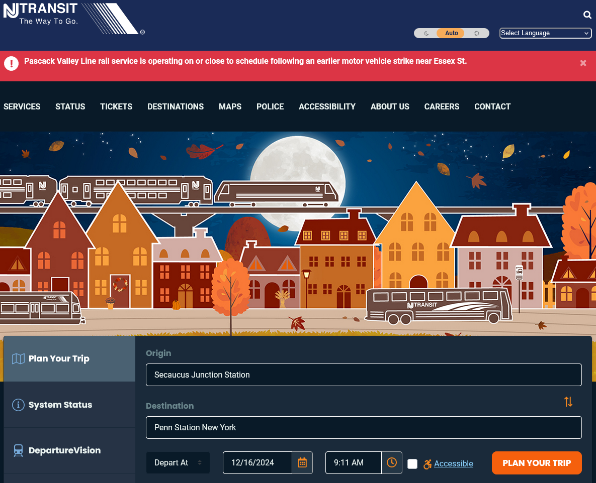
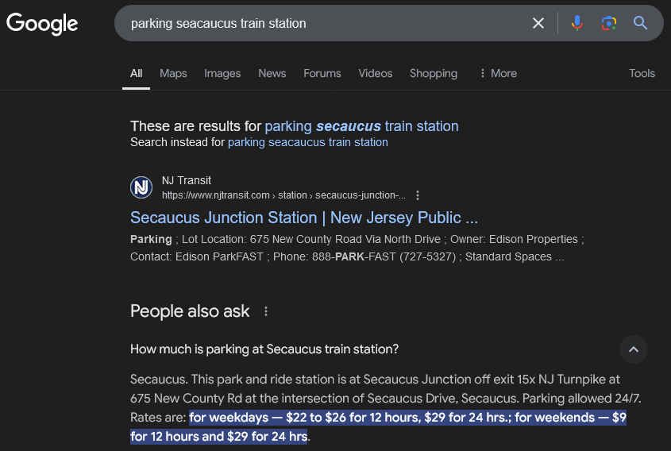
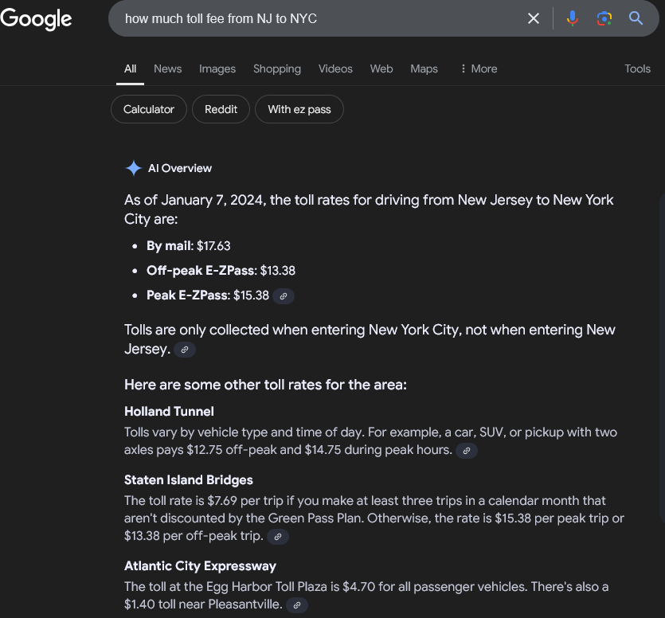
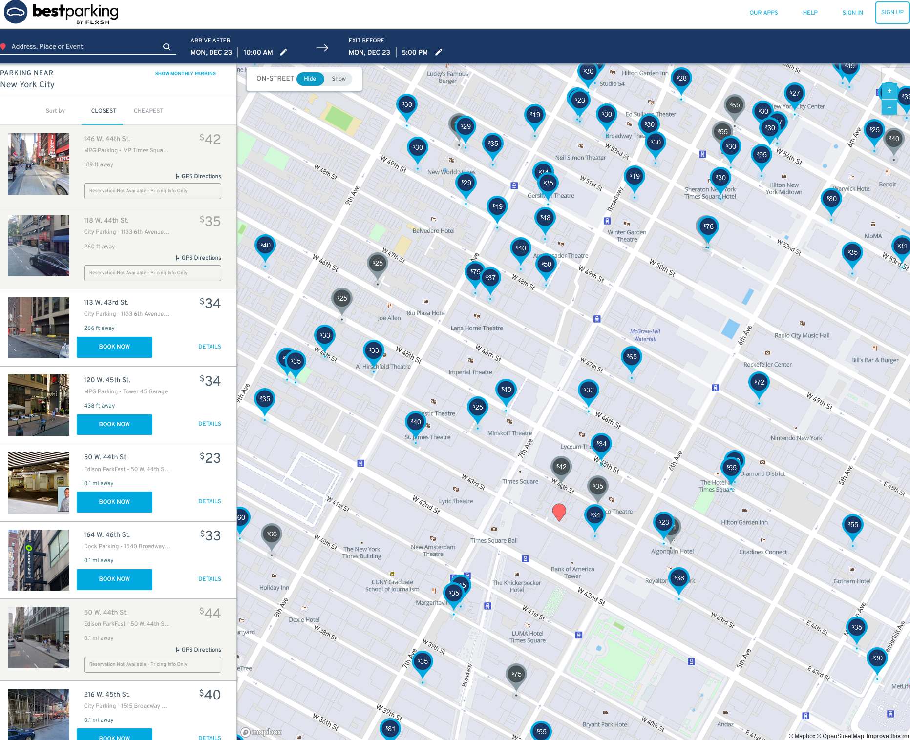
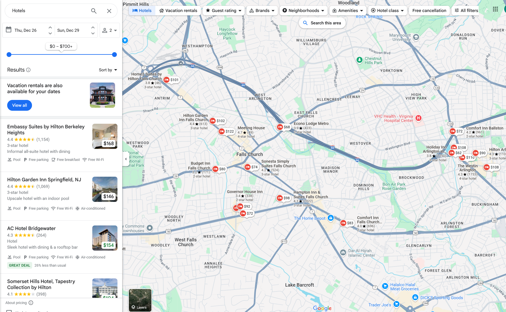

Dec 23 - 26 stay in Seacaucus, NJ

From Seacaucus, NJ to New York Penn Station (about 7 blocks away from Times Square): take NJ transit train. Ticket $5/person one way.

Parking at Seacaucus train station: too expensive. It's better to take Uber from hotel to train station.

Toll fee from NJ to NYC is less than $20. It's free from NYC back to NJ (remember to set no toll in Google Maps)

Parking in NYC: from $20 - $50/day (bestparking also has a phone app to book and pay for parking)

So, taking trains to NYC for 5 people costs: ($15 Uber + $5 train ticket * 5) * 2 ways = $80 and we need to go to the train station on time or we'll miss the train (which runs every hour or maybe more often)
Driving to NYC and park there: $10 gas + $20 toll + $40 (most of the times we can find a place that charges $30) = $70. We can go to and leave NYC whenever we like, no need to look at the watch.
Staying in DC area: it's not a bad idea to stay arround Falls Church, VA: not very far from DC, a lot of Vietnamese foods and there is Eden Center which is like a small Cho Ben Thanh.

Parking in DC: use the Best Parking app above, it costs about $20 - $30/day.